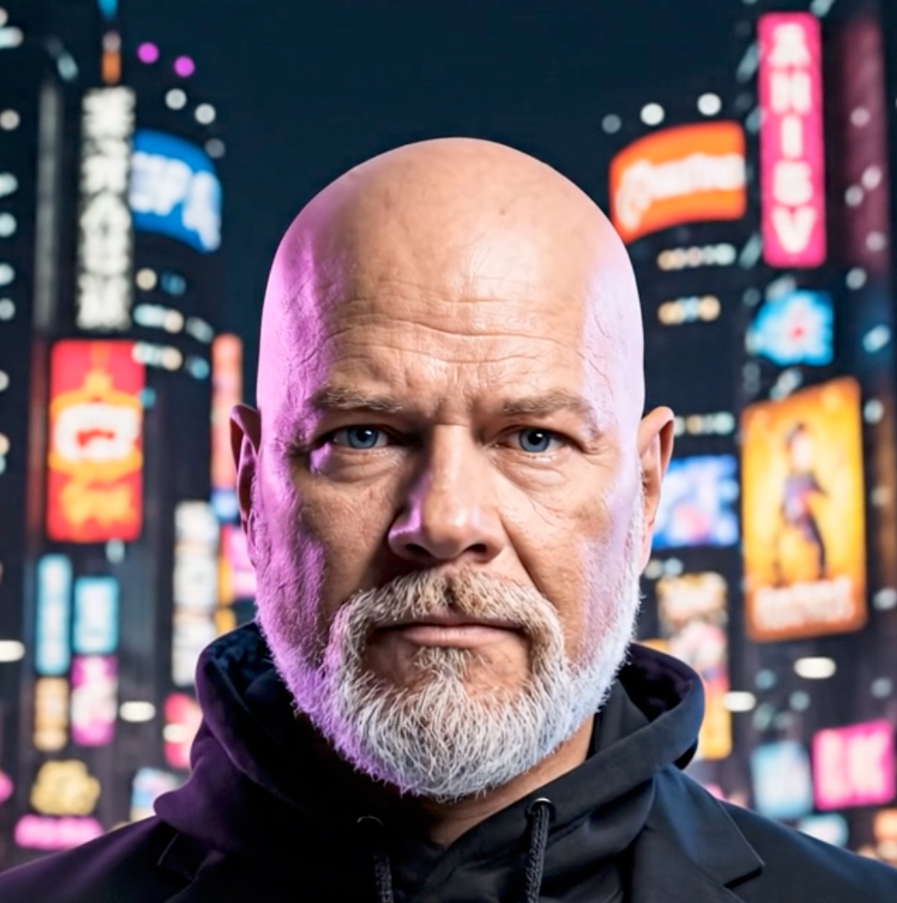

Good evening, Shane
Ready for tonight's adventure?
64°F · Clear — good night for a rooftop stop
✨ AI pick for tonight
Sunset Rooftop Crawl
Rooftop cocktails, a hidden speakeasy, and a late-night skyline view — built for your crew's vibe.
This Adventure's Crew
3 people going tonight
J
A
+2
🪙 Boost tonight's route
Unlock one more stop with coins
10s
🎲 Tonight's Wildcard
Revealing a surprise stop soon…
Trending routes near you
See all🍸
The Tasting Menu
🎯
Recess Energy
Friends Activity
See allJ&A
Jordan & Alex completed "After Hours" — 3 stops, 2 badges earned.
2h
S&R
Sam & Riya just checked in at Kaiseki Nine.
4h
D&K
Devon & Kai unlocked the "Explorer" badge.
Yesterday
Shane
Level 7 Explorer
🔥 Adventure streak
4 days
🔥
M
🔥
T
🔥
W
🔥
T
🔥
F
🔥
S
🔥
S